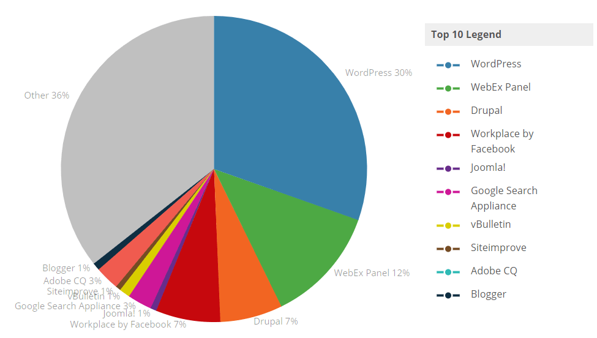
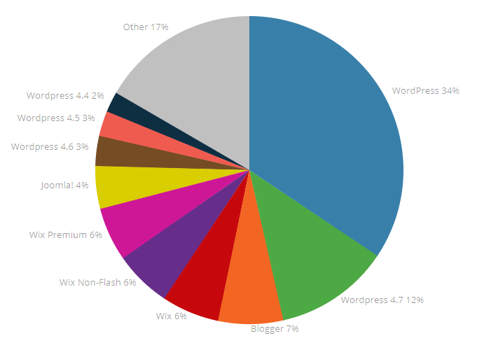
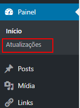
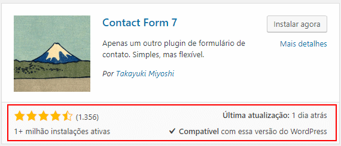
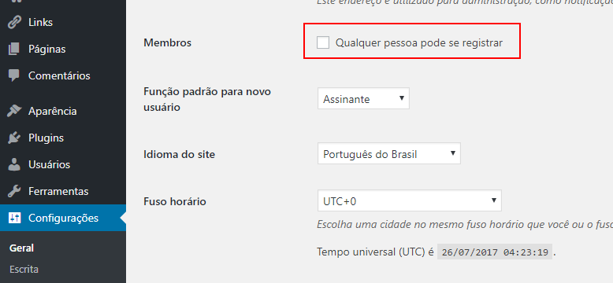

6 dicas de segurança no WordPress
Existe uma grande preocupação com a segurança no WordPress. Um dos argumentos de quem se coloca contra o uso da plataforma é o elevado número de vulnerabilidades divulgadas e os contínuos casos de invasão a sites construídos usando o CMS.
Segurança no WordPress
Um dos pontos que devem ser considerados é a grande utilização do WordPress atualmente. Usando a ferramenta Web Technology Trends, disponibilizada pelo Built With, verificamos que no mundo 30% dos websites usando algum CMS utilizam a plataforma.

No Brasil este número é ainda maior, chegando a 34% os sites que utilizam o WordPress como plataforma de CMS, sem contar a versão 4.7 e anteriores.

Quanto mais sites utilizando a plataforma, maior o número de alvos de ataques e, por questões de probabilidade, maior a quantidade de casos de invasão.
Mas muitas vezes isso ocorre por falta de alguns cuidados que poderiam diminuir a quantidade de vulnerabilidades e, consequentemente, o número de ataques sofridos por sites criados com o WordPress.
Ao longo deste post vamos apresentar 6 dicas de segurança para o WordPress, incluindo o uso e a indicação de plugins em 3 delas.
Claro que a segurança depende de diversos fatores, incluindo infraestrutura tecnológica e até as pessoas que tem acesso ao site (as estatísticas de ataques utilizando engenharia social têm crescido nos últimos anos), mas seguindo essas dicas você consegue dar um primeiro passo para diminuir os riscos de invasão.
Dicas de segurança
Mantenha o WordPress atualizado
Uma das falhas comuns, não só dos iniciantes, mas também de quem já usa o CMS há um tempo, é não atualizar a plataforma, seus plugins ou temas. Isso deixa espaço para uso de vulnerabilidades conhecidas e é um dos pontos que mais afeta a segurança no WordPress.
Apesar da plataforma facilitar bastante o processo de atualização, disponibilizando uma opção de menu específica para isso, muita gente desconsidera as recomendações ou não se preocupa com o impacto que o uso da estrutura desatualizada pode trazer.

O WordPress tem um roadmap bem definido, justamente para poder ajustar todas as vulnerabilidades identificadas pela comunidade. Sempre que uma nova versão da plataforma é disponibilizada a opção Atualizações no menu administrativo exibe um badge. O processo de atualização é bem simples, bastando que o usuário faça um backup antes de inicar para evitar problemas caso ocorra falhas no processo.
Além da plataforma, os plugins e os temas instalados também sofrem atualização e isto é indicado na mesma opção de menu. Mantê-los atualizados é tão importante quanto manter o próprio WordPress. E isso nos leva à próxima dica.
Tenha atenção com plugins e temas
Como vimos no item anterior, a atualização constante de plugins e temas também é uma questão importante de segurança no WordPress. Para isso, temos que ter atenção com três pontos principalmente:
- Manter instalados apenas os plugins e temas que estejam sendo utilizados. Se não está sendo utilizado, desinstale, pois são menos pontos de vulnerabilidade.
- Escolher sempre plugins e temas disponibilizados nos diretórios do próprio WordPress, o que é uma primeira garantia de que não contém código malicioso.
- Ter atenção com a quantidade de sites utilizando o plugin ou tema, a avaliação da comunidade e a data de última atualização.

Em detaque na imagem acima as características principais do plugin Contact Form 7, um dos melhores plugins de criação de formulários. O plugin tem mais de 1 milhão de instalações ativas, o que indica que tem uma comunidade envolvida, identificando e ajustantando eventuais vulnerabilidades, possui uma classificação de 4 estrelas e meia, com mais de 1.300 avaliações, o que demonstra a sua qualidade e teve a última atualização a 1 dia (consulta em 26/07/2017), que demonstra ajustes e evolução constante.
Esses critérios são muito importantes e devem ser considerados sempre antes de instalar um novo plugin. A escolha correta de plugins aumenta a segurança no Wordpres, diminuindo o risco de ataques.
Gerencie corretamente os usuários
Outra dica importante e que na maioria das vezes é subestimada pelos administradores da plataforma é o gerenciamento de usuários. Em grande parte das vezes é utilizado apenas o usuário administrativo padrão, criado durante a instalação. Uma boa prática de segurança no WordPress é criar um outro usuário com função administrativa, excluindo em seguida o usuário padrão.
Além disso, é importante usar usuários com perfís diferentes de Administrador, como Editor por exemplo, para tarefas cotidianas como criação de conteúdo. O usuário administrativo deve ser usado apenas para configurações do site e funções que não podem ser realizadas por outro perfil.
Também podem ser feitas algumas configurações para diminuir os riscos relacionados com os usuários do WordPress, como desabilitar a opção de que qualquer pessoa pode se registrar no site na opção Configurações -> Geral do menu administrativo (ver imagem abaixo).

Realize backup do WordPress
Mesmo com todos os cuidados para aumentar a segurança no WordPress, problemas sempre podem acontecer. Caso isso ocorra e afete o conteúdo do seu site, a única saída é ter um backup recente, permitindo restaurar ao ponto anterior ao incidente.
Existem diversos plugins que facilitam o processo de backup e mantém as informações em repositórios na nuvem como o Google Drive e o Dropbox. Um deles é o UpdraftPlus.
Futuramente faremos um post específico sobre esse plugin, mostrando as principais configurações disponíveis.
Cuidados com as senhas
Um dos tipos de ataque mais simples é tentar o login usando variações de senhas. Esse tipo de ataque funciona muito bem quando não temos atenção e usamos senhas simples, como nossa data de nascimento por exemplo.
Por isso, um dos requisitos mais importantes para aumentar a segurança no WordPress é criar senhas fortes, com uso de letras em caixa alta e baixa, números e caracteres especiais. Se eventualmente você tem dificuldade em criar senhas assim, existem sites que te ajudam com isso, como o Gerador de Senhas. Nele é possível definir o tamanho da senha e o tipo de caracteres que serão usados.
Além disso, é sempre importante limitar o número de tentativas de login, para evitar o uso de robôs que tentam invadir o site usando variações automatizadas de senha. Existem plugins que ajudam com essa configurações e um deles é o WP Limit Login Attempts. Com ele, além de limitar a quantidade de tentativas erradas de login, é possível bloquear o acesso do IP da máquina responsável por essas tentativas.
Retire a tag do WordPress
Uma das principais dicas de segurança no WordPress é justamente retirar a tag de identificação da plataforma do seu site. Essa informação é rastreada por bots que vasculham a internet procurando sites feitos com o CMS, para realizar ataques com vulnerabilidades conhecidas. A partir do momento em que essa tag é retirada, diminui o risco de ser encontrado por esses bots e, consequentemente, o risco de sofrer ataques.
Existem diversas formas de fazer isso, incluindo a alteração dos arquivos PHP do WordPress, mas como nem todo mundo tem conhecimento de programação ou tem paciência ou tempo de fazer essas alterações, também existem plugins que fazem essa configuração.
Um que foi testado pelo Presença Online .NET é o Meta Generator and Version Info Remover. Com ele é possível retirar a tag do WordPress com uma simples instalação e ativação de plugin.
Veja o vídeo no YouTube com mais detalhes das 6 dicas de segurança no WordPress: